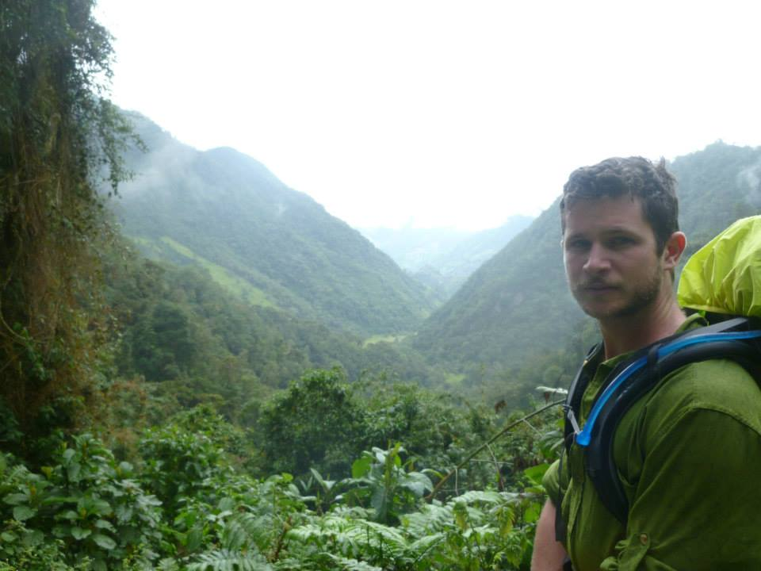

jakediamond.science
Jake Diamond
Greetings!
Hope you are well reading this. My name is Jake and I work on water quality and ecohydrology.
I am now a Programme Specialist for Water Quality and Ecohydrology at UNESCO, in Paris.
My background is in environmental data science, hydrology, ecosystem ecology, and biogeochemistry. This website has some of my research, figures, and publications.

Research
All research & papers →I’m interested in questions like:
- How do ecosystems self-organize?
- What can emergent properties of ecosystems tell us about their internal processes?
- How can we use our understanding of ecosystems to improve resource management and human health?
 Wetland
microtopography
Wetland
microtopography
 River
ecology
River
ecology
 Headwater
streams
Headwater
streams
Contact
Thank you for visiting!